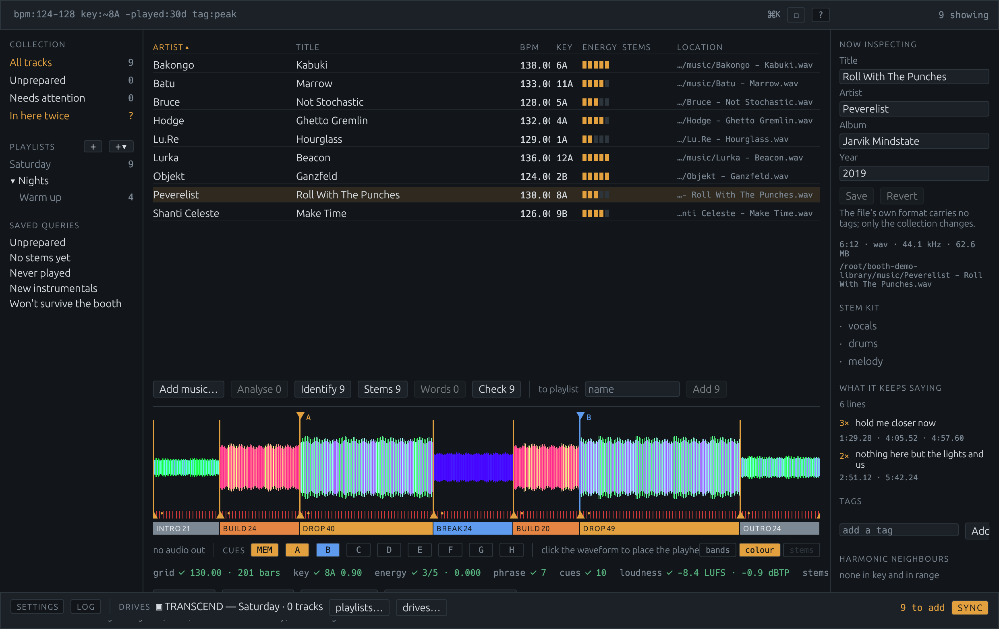
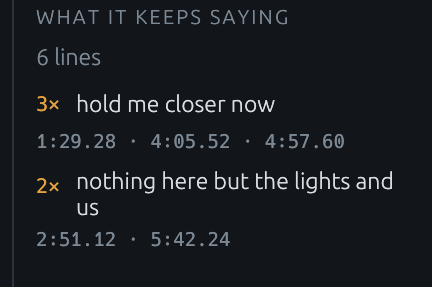
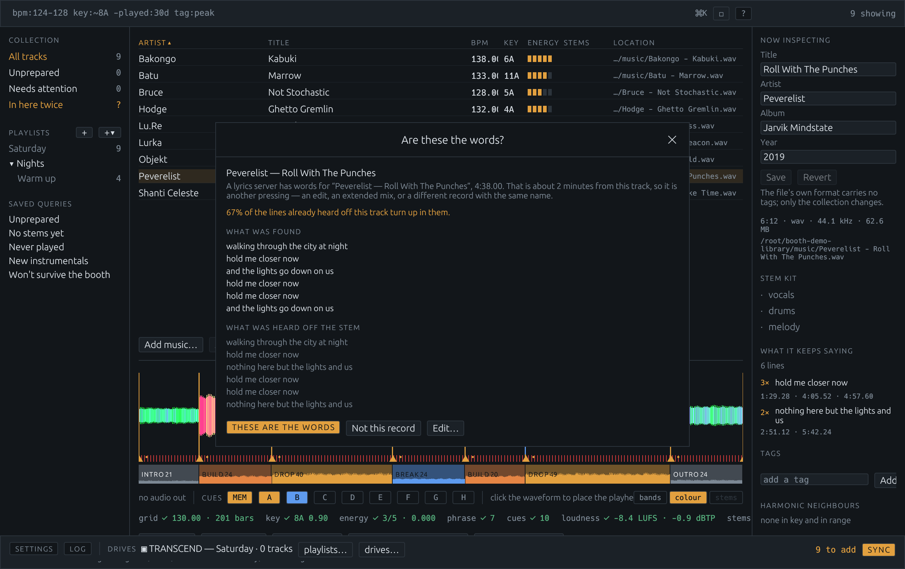
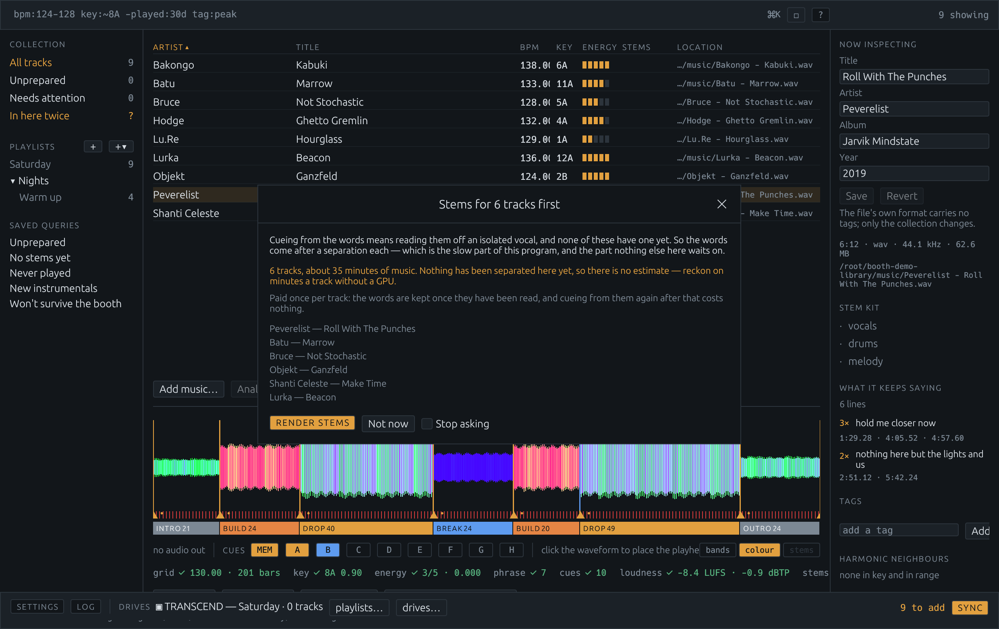
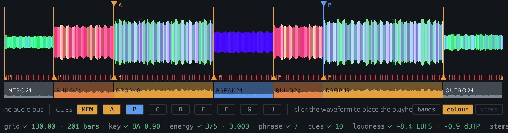
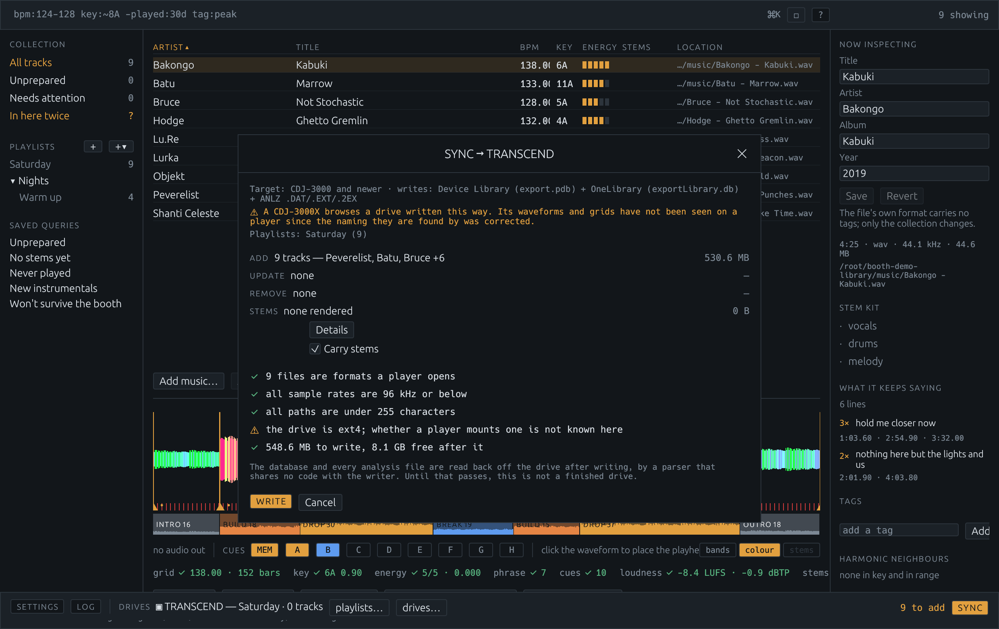

Version 0.0.7 · for macOS and Linux · free
Booth holds your collection, listens to every track, and writes the USB drive a Pioneer / AlphaTheta player reads — both of its on-drive databases, from one window, with nothing rekordbox has touched on the stick.
The collection on the left, the tracks in the middle, the track you are looking at on the right, the waveform underneath and the drive along the bottom. There is no import mode, no export mode and no second application: preparing a record and putting it on a stick happen in the same place.

bpm:124–128
key:~8A -played:30d tag:peak is a search, and saving it makes a playlist that keeps
itself. Everything runs on your machine; the one thing that touches the network is asking
AcoustID what a recording is, which is a feature you turn on.Cue points placed by energy can only ever find the loud part. That is worth having — the drop is where most mixes turn — but the moment you actually reach for is usually the line the crowd sings, and a hook and the verse before it are the same loudness, the same instruments and the same key. Nothing in a spectrum tells them apart. The words do.
So Booth renders the vocal stem, runs it through a speech recogniser, and reads what comes back for repetition. Lines that say the same thing are grouped loosely, because a recogniser writes one sung phrase four slightly different ways and matching word-for-word would count a hook sung eight times as eight different lines. The group with the most separate airings is the hook, and it becomes a cue where it first lands.
Two things it refuses to do. An ad-lib is not a hook — a line needs at least two words, because “yeah” is the most repeated thing in half the vocal stems ever recorded and marks nothing. And a recogniser stuck in a loop does not invent one: airings less than four seconds apart count once, which is true of a chorus that sings its line twice over and true of Whisper emitting “thanks for watching” forty times over a breakdown.

Before anything expensive, Booth asks a lyrics server. A hit costs one request where listening costs a stem separation and a recogniser pass — and what comes back is what somebody wrote down rather than a machine's guess at a vocal. Where the track was named by its own sound, or where the lyric agrees with what was already heard, it is taken outright. Where it is plausible and not certain — a remix is a different length from the record it is built on and keeps only some of its words — it is put up for a yes or a no, with both sets of words on screen, and you can correct them by hand.
The times a lyric arrives with are not trusted as this pressing's: an LRC is synced against one release and a DJ's library is extended mixes, so the words go in needing placing and are moved onto singing measured off the stem. Each track then says where its words came from — heard off the stem, looked up, or corrected by hand — because a recogniser's mistakes read like lyrics, and when a cue reads oddly that is most of what there is to go on.

Reading the words off a track that has no vocal stem yet means separating one, which is the slow part of this program and the part nothing else waits on. Asking for cues on a playlist is therefore asking for a separation per track in it — so the batch is described and priced before it starts, in minutes measured from the last separations this machine did rather than guessed from the hardware.

A player holds eight hot cues and a busy track offers more than eight moments. So the buttons are shared rather than ranked against each other — four to the arrangement, four to the words, then whatever the other kind did not want — and everything else worth marking becomes a memory cue, which costs no button at all.
They are named the way a DJ writes on the markers themselves: Start, then each section numbered within its own kind — Build 1, Drop 1, Break 1, Drop 2 — and End on the last bar. Numbering within the kind is the point; six markers all reading “drop” say nothing that looking at the waveform does not.
A sung line gets a verse number and the line itself, every time it comes round:
V1 hold me closer now. A player shows a memory cue's comment while the track is
loaded, so the words are on the deck in front of you and the number says where in the record
you are. Cues from the words are rounded down to the beat rather than to the nearest
one — a sung line rarely starts on the beat, and a hook cue that clips its own first word is
one nobody presses twice.

A drive a player opens has two databases on it that have to agree about what is
on the stick: the legacy export.pdb every deck since 2009 reads, and the newer
exportLibrary.db that every player sold since 2023 needs. Booth writes both from
one collection, so they cannot disagree, and every generation's analysis files go on —
.DAT, .EXT and .2EX.
Then it reads the stick back and checks it. You say the oldest player the drive has to work on, and the checks use that generation's rules: anything it could not open — a FLAC on a nexus deck, a 96 kHz file on an NXS2 — is re-encoded to a 320 kbps MP3 on the way onto the stick, while your library keeps its lossless copy.

The audio on a USB stick is replaceable. The cues, the grids, the playlist order
and the history a player wrote back after a gig are not, and they are a few files under
PIONEER.
So every time a drive is written — or a prepared one is plugged in while Booth is running — those files are copied beside your library. Databases, analysis, artwork, settings, the lot. The audio is hard-linked to the library's own copy rather than duplicated, so archiving a 64 GB stick costs a few megabytes and a directory entry per track. Each copy is a plain folder with a manifest saying what was found: getting one back onto a stick is a copy, with no tool in the middle.
A drive is stored once per state. Leaving it plugged in does nothing; writing to it and
plugging it in again stores the new state beside the old one. What counts as a state is the
drive's own files — deliberately not the .DS_Store breadcrumbs macOS sprinkles on
a stick the moment anything looks at one, which would otherwise make a drive that is different
every time it is read, and copied every time it is read.
A track your collection names but the disk has lost — the greyed-out row — is put back, off the drive, at the path the collection already gives it. That one happens whatever your settings say, because a row that cannot be played is broken rather than absent: the names are in the collection, the music is on the stick, and once the stick is gone neither half answers for the other.
Music on the stick your library has not got is copied in by default — the expensive option, on purpose. Everything else here is measured in disk, which can be bought.
A player writes a history to the stick it played from: every track it loaded, in order, one session a night. It is the only thing on a drive a collection cannot produce for itself, and it is the record of what was played rather than what was prepared. When a drive is copied, its history is read back and becomes playlists, named by the date the player gave them.
rekordbox is not disliked because it is bad at its job. It is disliked because it is load-bearing: the lock-in is not the application, it is the format on the stick. That format is public, documented and writable — so the honest comparison is feature by feature, including the features that go the other way.
| Booth | What it means in the booth |
|---|---|
| Cues placed from the lyric | The hook becomes a cue and every memory cue carries the line that lands there, so the words are on the deck while the track is loaded. Nothing else places cues from what is sung. |
| Stems a standalone player can read | Vocals, melody and drums rendered at home and written to the stick as tracks, sorted directly under the record they came from. rekordbox separates stems in Performance mode — which means a computer is running. Two CDJs and no laptop is the difference. |
| A copy of every drive, automatically | Every write and every plug-in archives the stick's databases and analysis, with the audio hard-linked. A stick lost on the way home costs you the stick. |
| A collection you can read | Your files in your folders, and a collection file you can open in a text editor. Nothing is uploaded, there is no account, and nothing stops working if this project does. |
| It says what will be slow before the night does | A quarantined download, a file still in Downloads, one inside Dropbox or iCloud — seconds to open rather than milliseconds. Booth says so at import. |
| Free, and no subscription tier above it | Free to download, run and modify for personal and internal use. There is no paid version of this with the good features in it. |
| rekordbox | Where that leaves this |
|---|---|
| It is tested on every player there is | One deck has read a drive this writes from its own slot: a CDJ-3000X on firmware 1.40. A CDJ-1500X has played from that drive over DJ-Link with the 3000X hosting it, cues and all — which is not the same test. And one CDJ-3000 on firmware 2.05 refused a drive outright, which nothing has yet explained. The files are written for every generation; whether a given player mounts them is a thing to find out before the night, not during it. The progress page has it in full. |
| It performs | Booth has one deck, for auditioning what you are preparing. No pitch, no sync, no mixing, and it will not play out to a club by itself. |
| Hardware integration, cloud, lighting, video | None of it. This writes drives and prepares tracks. |
| Official support, and a company behind it | This is one project with a licence, a test suite and an issue tracker. The formats it writes were worked out from public research and a lot of hexdumps. |
| Key detection you can lean on | Booth's is right about 37% of the time on a real library and confuses a key with its relative major or minor about another 18%. It is shown with its confidence for exactly that reason. |
Not affiliated with AlphaTheta or Pioneer DJ. rekordbox's plans and features change; check theirs rather than taking this page's word for it.
The macOS app is built by the project's own packaging script and attached to each release —
the library window and the booth-cli command-line tool in one bundle, universal for
Apple silicon and Intel, so the two can never be different versions of each other.
git clone https://github.com/jwilkins/booth
cd booth
cargo run --release # the library windowCueing from the words needs a speech recogniser installed separately — Booth does not ship one and will not download one — and stems need a separation backend. Both are pointed at in Settings, and everything else works without them.